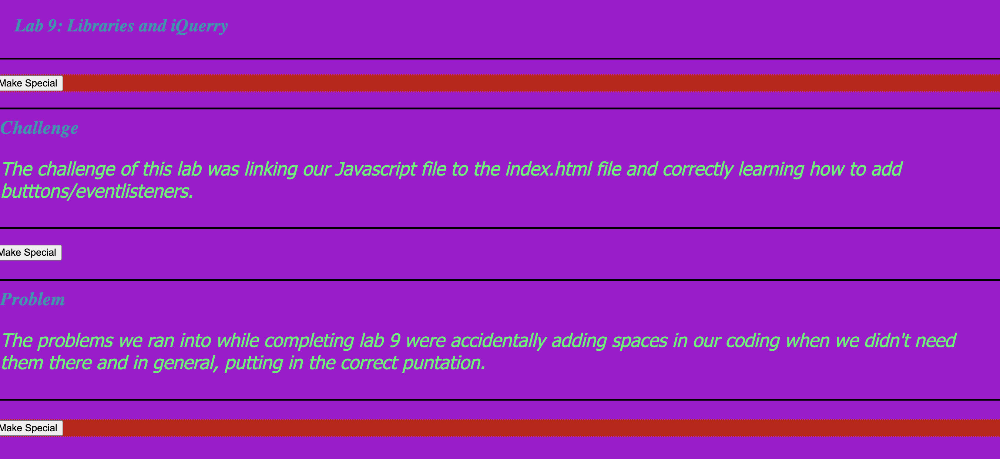
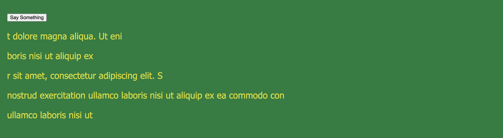
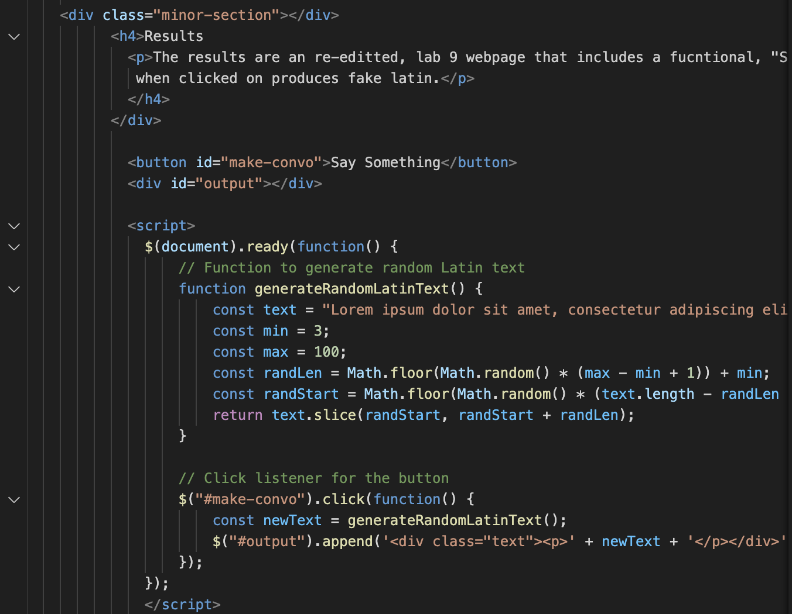
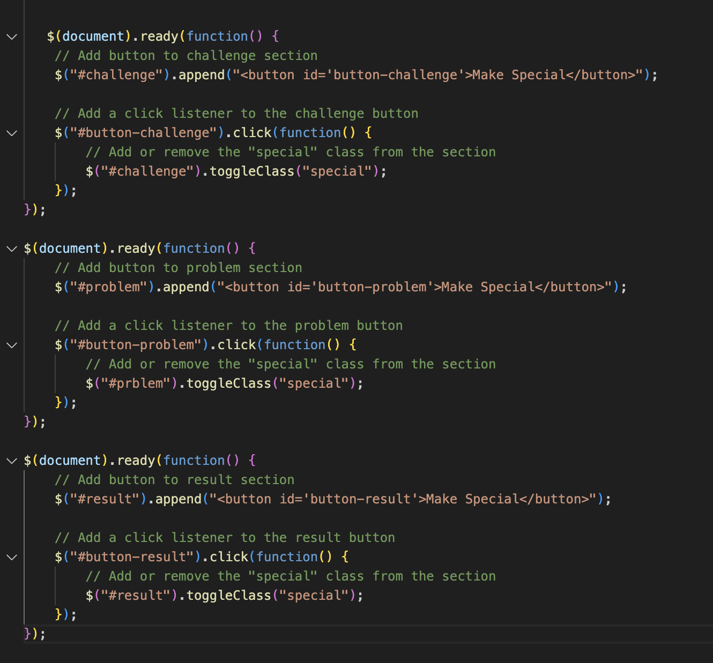

Lab 4: Debugging Tools and Strategies
Challenge
The challenges of this lab included revising older labs that we had previosuly submitted for past assignemtns that were due earlier in the quarter and then correcting the mistakes and/or errors that we intially made hwne completing those labs.
Problems
As for the problems that arose myself and my partner decided to complete this remotely and becuase of such revised and reviewed different previous assignments. Thus, the problems that arose duirng this lab were different for the both of us but personally, I struggled with simply correcting my previous mistakes. Additionally, during the lab, my personal device that I was completing it on, kept losing internet connection for the last two hours that I was finishing it.
Results
The results of this lab are a new webpage and a revised versions of lab 9 and 10.
Debugging
For both labs I didn't append the buttons correctly and/or didn't label the button id's correctly.
   